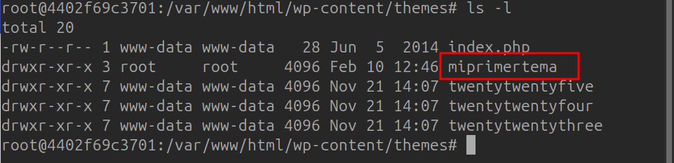
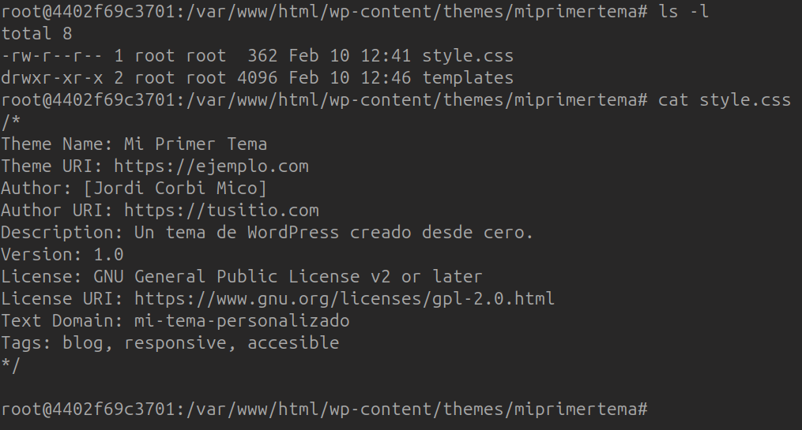
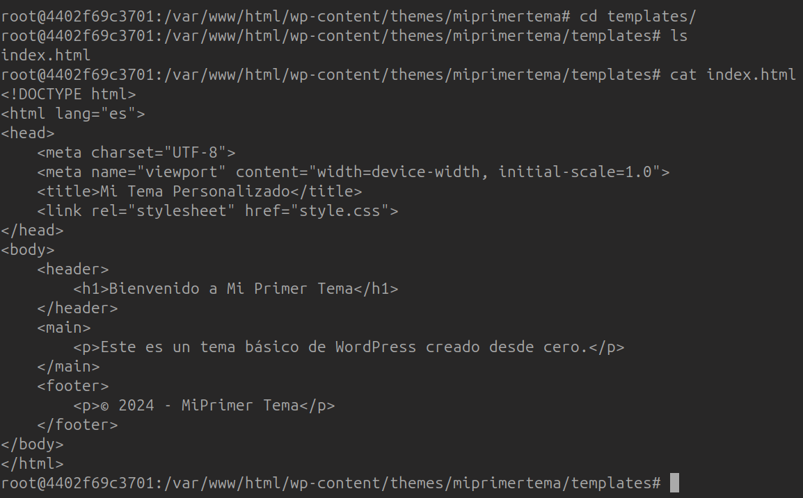
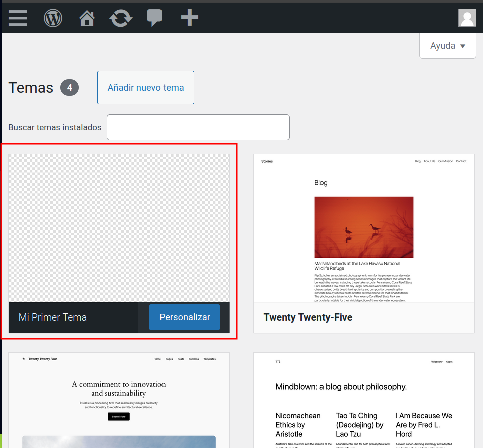
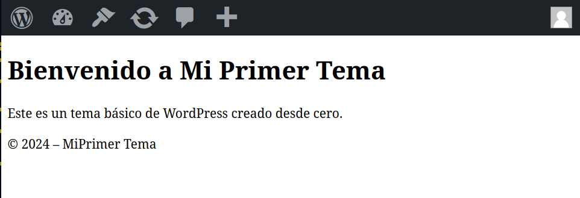

🎨 Creación de un Tema de WordPress desde Cero¶
🎯 Objetivo¶
Desarrollar un tema personalizado para WordPress desde cero, creando los archivos esenciales style.css e index.php, y organizando su estructura en las carpetas adecuadas.
🛠️ Parte 1: Configuración del Entorno¶
- Instalación de WordPress:
- Configura un entorno de desarrollo local utilizando herramientas como XAMPP, WAMP o Local by Flywheel.
-
Descarga la última versión de WordPress desde wordpress.org e instálala en tu entorno local.
-
Acceso al Directorio de Temas:
- Navega al directorio de temas de WordPress:
wp-content/themes/ - Creación de la carpeta del tema:
- Crea una carpeta en el directorio de temas de WordPress para tu tema personalizado:
- Ejemplo:
wp-content/themes/mi-tema-personalizado
📁 Parte 2: Creación de los Archivos Requeridos¶
- Creación del archivo
style.css: - Dentro de una nueva carpeta para tu tema (por ejemplo,
mi-tema-personalizado), crea un archivo llamadostyle.css. - Añade la siguiente cabecera al archivo:
/* Theme Name: Mi Tema Personalizado Theme URI: http://ejemplo.com/mi-tema-personalizado Author: Tu Nombre Author URI: http://ejemplo.com Description: Una breve descripción de tu tema. Version: 1.0 License: GNU General Public License v2 or later License URI: http://www.gnu.org/licenses/gpl-2.0.html Text Domain: mi-tema-personalizado */ -
Esta cabecera proporciona información esencial sobre tu tema a WordPress.

-
Creación del archivo
index.php: - En el mismo directorio de tu tema dentro de la carpeta
templates, crea un archivo llamadoindex.php. - Añade contenido HTML básico para probar el tema:
<!DOCTYPE html> <html <?php language_attributes(); ?>> <head> <meta charset="<?php bloginfo('charset'); ?>"> <title><?php bloginfo('name'); ?></title> <link rel="stylesheet" href="<?php bloginfo('stylesheet_url'); ?>"> </head> <body> <h1><?php bloginfo('name'); ?></h1> <p><?php bloginfo('description'); ?></p> </body> </html> - Este archivo sirve como la plantilla principal de tu tema.

🚀 Parte 3: Activación del Tema en WordPress¶
- Activar el Tema:
- Inicia sesión en el panel de administración de WordPress.
- Ve a la sección de "Apariencia" y luego a "Temas".
- Deberías ver tu tema "Mi Tema Personalizado" listado allí.
- Haz clic en "Activar" para establecerlo como el tema activo de tu sitio.

- Verificación:
- Visita la página principal de tu sitio para asegurarte de que el tema se muestra correctamente.
- Deberías ver el nombre y la descripción de tu sitio, tal como se definió en
index.php.
